Wikipedia's Request for Adminship
Wikipedia's Request for Adminship (RfA) is the process by which the community votes on whether to grant an editor administrator privileges — tools such as the ability to delete pages, block users, and protect articles. Any established editor may cast a support, oppose, or neutral vote, and leave a written comment explaining their reasoning.
The dataset covers elections from 2003 to 2013. Each record captures the voter (SRC), the candidate (TGT), the vote value (+1 support, -1 oppose, 0 neutral), the overall outcome of the election, the year, and the full text comment left by the voter.
The raw data forms a directed multigraph: nodes are editors, and a directed edge from A to B means A cast a vote on B's adminship candidacy. Because some editors ran multiple times and some voters participated in hundreds of elections, the graph is dense and richly weighted.
From Votes to Voter Networks
Rather than analysing the raw voting graph directly, we projected it into two voter–voter networks by asking: for every pair of editors who both voted on the same candidate, did they agree or disagree? This yields an agreement graph and a disagreement graph, each edge carrying a normalized score between 0 and 1 reflecting how consistently two voters aligned. Only pairs with at least 4 shared votes were kept, filtering out low-evidence relationships.
Degree Distributions
Both graphs follow heavy-tailed degree distributions — a small number of editors are highly connected, while most have few connections.
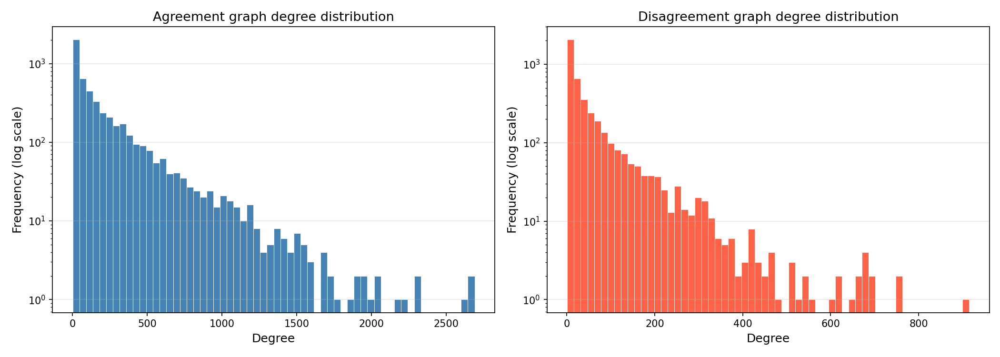
Edge Weight Distributions
Agreement edges cluster strongly near 1.0 — when editors agree, they tend to agree consistently. Disagreement edges are more spread out, suggesting varied levels of ideological distance.
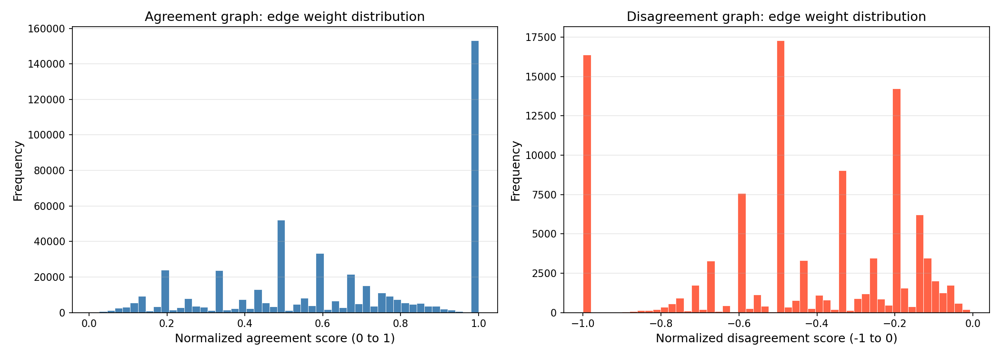
Most Connected Editors
The top hubs in each graph are strikingly different. Agreement hubs are prolific, consensus-oriented long-term editors. Disagreement hubs — led by Xoloz with nearly 1,000 conflict relationships — are systematic contrarians whose voting patterns oppose a large portion of the active voter base.
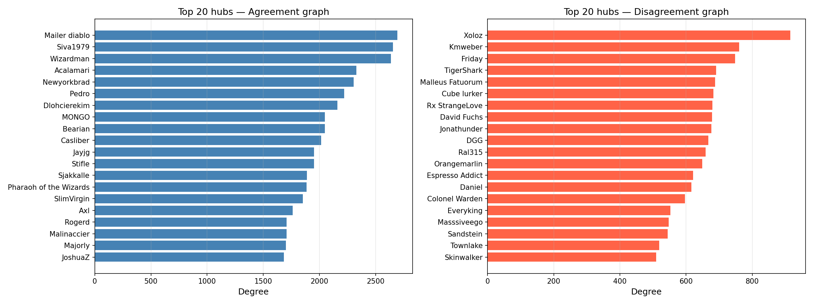
Factions in the Voter Network
We applied the Louvain algorithm to the agreement graph to detect communities of editors who share similar voting standards. Five communities emerged — four large factions of roughly equal size and one smaller cluster.
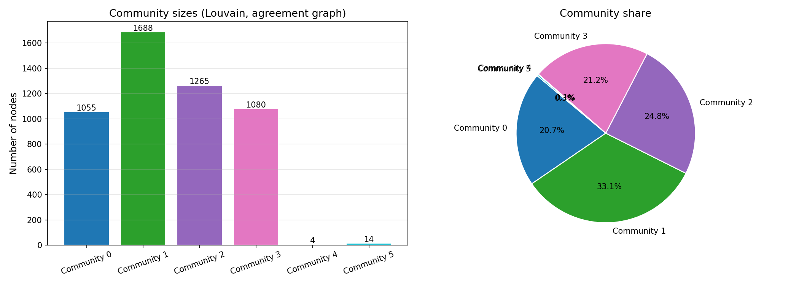
Agreement Subgraph
The top 150 editors by degree, coloured by community. Node size reflects degree; edge width reflects agreement strength. Communities pull together in the layout, revealing clear structural separation.
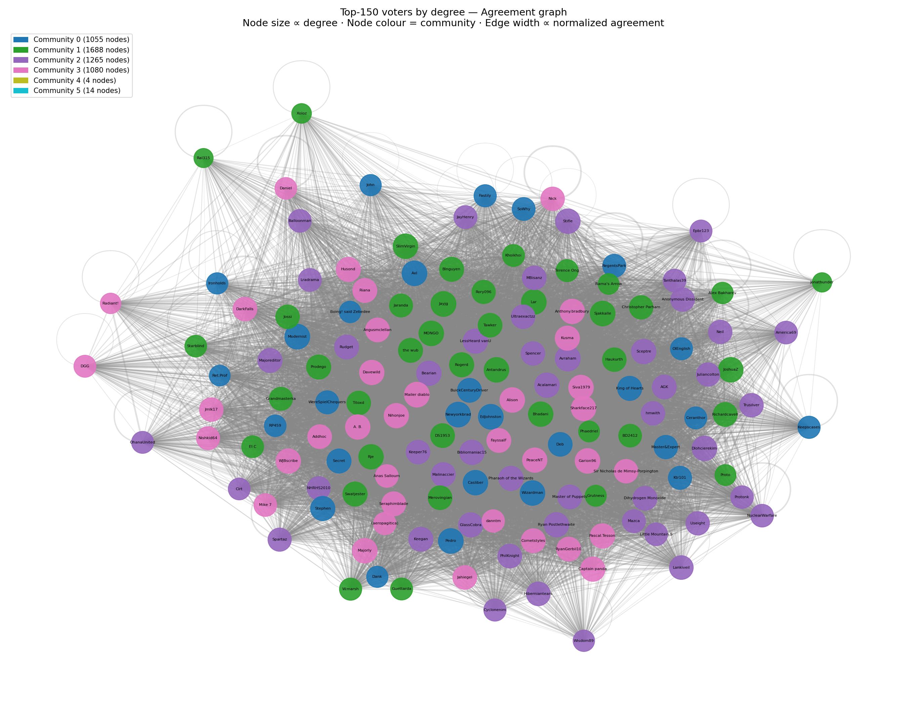
Disagreement Subgraph
The same editors projected onto the disagreement graph. Node colour still reflects agreement community, revealing which communities are in conflict with each other.
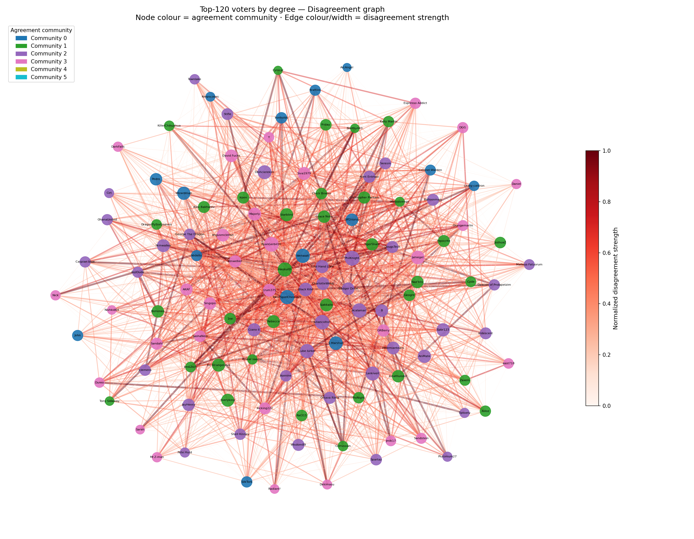
Cross-Community Conflict
The heatmaps below show how disagreement distributes across community pairs. The structure is multipolar: communities 1, 2, and 3 are all in tension with each other, while community 2 shows significant internal disagreement. The C0–C2 pair stands out with an average normalized disagreement strength of 0.96 — when these editors clash, they almost always land on opposite sides.
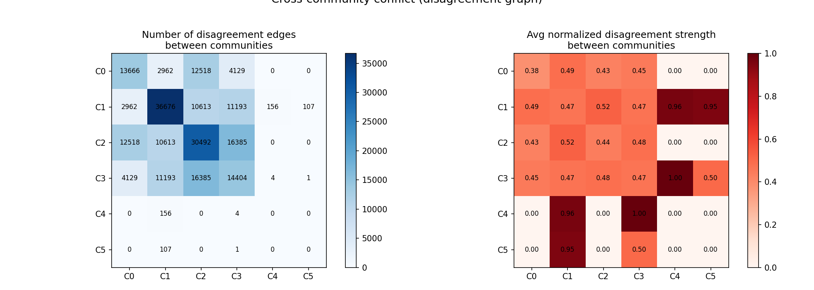
How the RfA Process Changed Over Time
Overall Activity
Voting activity peaked in the mid-to-late 2000s and declined significantly toward 2013, reflecting a well-documented trend of declining Wikipedia editor participation.
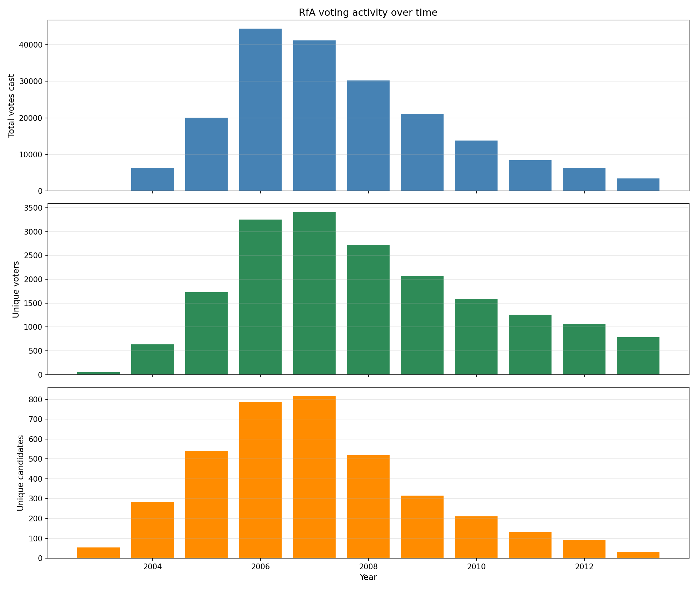
Support vs Oppose Ratio
The proportion of support votes fluctuated considerably across years, suggesting the community's appetite for promoting new admins was not stable over time.

RfA Success Rate
The fraction of RfA candidates who were successfully promoted changed markedly over the dataset's timespan, pointing to shifting community standards for adminship.
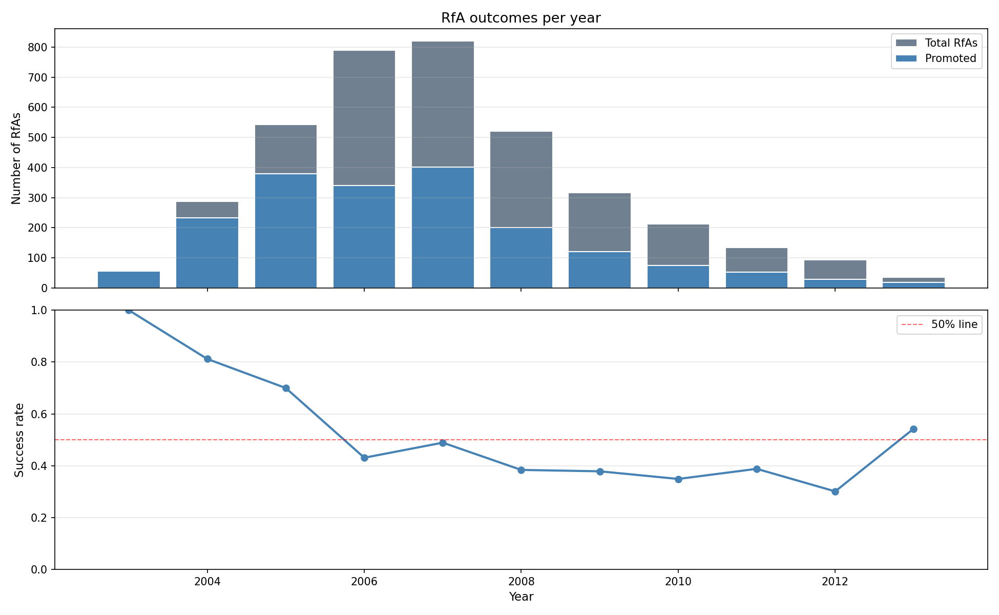
Community Activity Over Time
Different communities peaked in different years, suggesting they partly reflect cohorts of editors who were most active in distinct eras rather than purely ideological groupings.
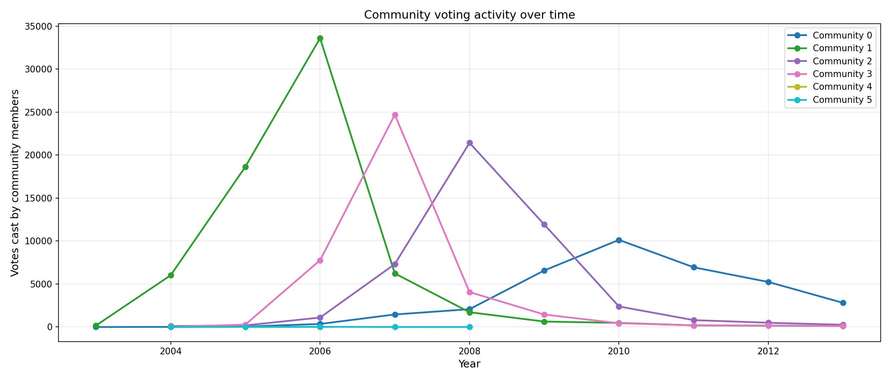
Support Ratio per Community
Communities differed not just in when they were active, but in how their support tendencies evolved — some communities became more critical over time, others remained consistently strict.
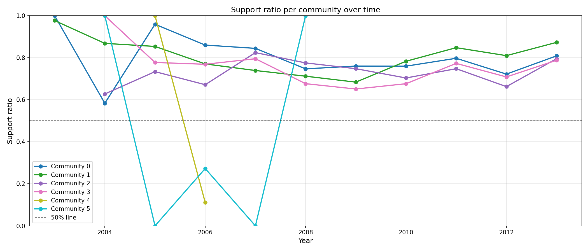
What Each Community Talks About
We applied TF-IDF across the vote comment texts of each community to identify vocabulary that is distinctive to each faction. Terms that appear frequently within a community but rarely across others score highest, revealing the concepts and concerns that define each community's identity.
Word cloud figures to be inserted here.
Explore the Data Yourself
All processed graph files are available for download. The raw RfA dataset is provided as-is from the Stanford SNAP collection.
Original dataset: 198,275 voting records in plain text format.
Voter–voter agreement projection with edge weights.
Voter–voter disagreement projection with edge weights.
Agreement graph with Louvain community labels attached to each node.
Full Technical Details
The explainer notebook contains the complete analysis pipeline: data parsing, graph construction, projection methodology, community detection, TF-IDF text analysis, and all visualisation code with commentary.
Full pipeline with code, methodology, and results — hosted on nbviewer.